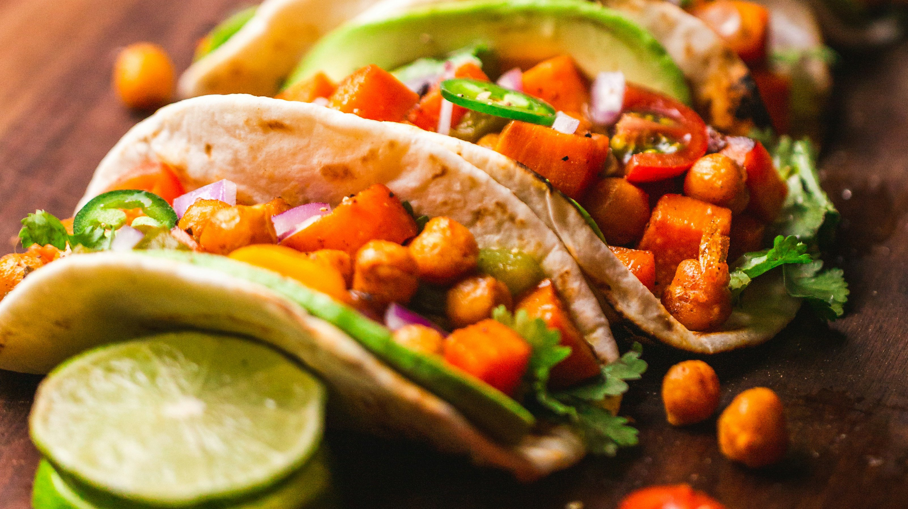
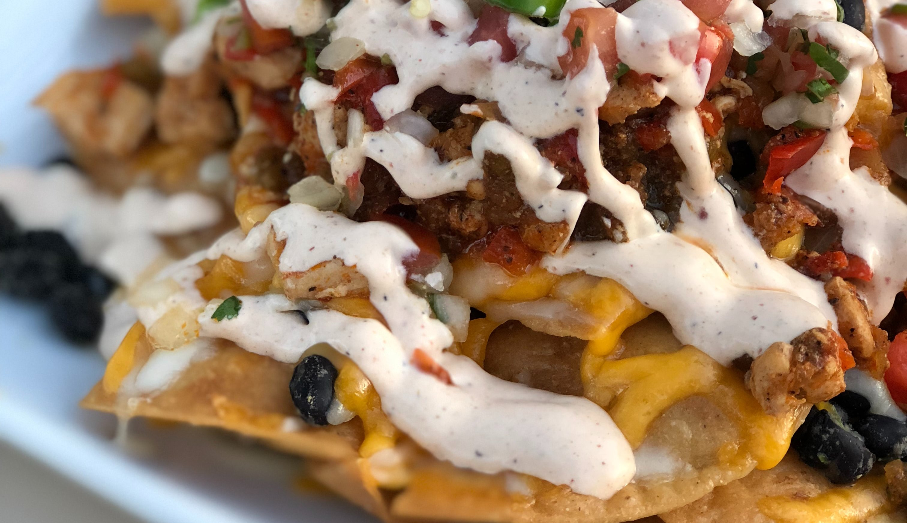
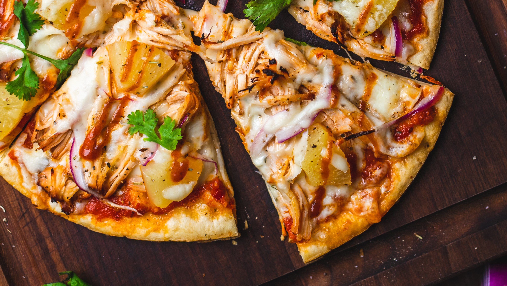

This weeks Vegan Recipe

Ingredients
- ¾ cup water
- 1 tablespoon taco seasoning
- ½ tablespoon dried minced onions/onion powder
- 1 cup TVP (textured vegetable protein)
- 1 can black beans, drained
- salt to taste
- 6 corn tortillas
- Toppings (optional): avocado, cilantro, salsa, limes, red onion,
How to make
- Bring the water, taco seasoning, and onion to a boil. Add the TVP and reduce heat.
- Allow the TVP to absorb the liquid, and then add the drained black beans.
- Cover and cook on low heat, stirring often.
- Heat up the tortillas in a pan with some oil.
- Remove the filling from the heat and build your tacos using your favorite toppings.
This weeks Meat Recipe

Ingredients
- 250-300g leftover roast pork, torn or chopped up
- 200g bag Tesco cool tortilla chips
- 185g smoked Cheddar, grated
- 1 fresh chilli, finely sliced (optional)
- lime wedges, to serve (optional)
- For the homemade BBQ sauce
- 200ml tomato ketchup
- 60ml cider vinegar
How to make
- Preheat the oven to gas 7, 220°C, fan 200°C Fan. To make the sauce, mix the ketchup, vinegar, sugar, Worcestershire sauce and maple syrup in a large bowl.
- Scatter half the tortilla chips over the base of a large ovenproof dish or roasting tin.
- Bake in the oven for 12-15 mins until the cheese has just melted and pork is hot through.
- While the nachos are baking, make the slaw: mix all the ingredients (except the extra spring onions) well, then add a few tbsp water to loosen the dressing if needed.
- Remove the nachos from the oven and top with chilli, if using, and the extra sliced spring onions.
- Serve the nachos warm with the fresh slaw on the side and lime wedges to squeeze over, if you like.
This weeks Free-From Recipe

Ingredients
- 400g gluten-free bread flour
- 2 heaped tsp golden caster sugar
- 2 tsp gluten-free baking powder
- 1 tsp fine salt
- 1 heaped tsp xanthan gum
- 5 tbsp olive oil
- 2 tbsp olive oil
- 1 small onion, finely chopped
How to make
- STEP 1
Heat the oven to 220C/200 fan/gas 7 and put two baking sheets inside. - STEP 2
Make the sauce: heat the oil in a small saucepan and cook the onion with a generous pinch of salt for 10 mins over a low heat until softened. Add the chopped tomatoes, purée and sugar and bring to a gentle simmer. - STEP 3
Make the dough: mix the flour, sugar, baking powder, salt and xanthan gum in a large mixing bowl. Make a well in the centre and pour in 250ml warm water and the olive oil. - STEP 4
Finish the bases with a thin layer of the sauce and torn up mozzarella. Place the baking sheets on top of the hot baking sheets in the oven and cook for 8 -10 mins or until crisp around the edges.